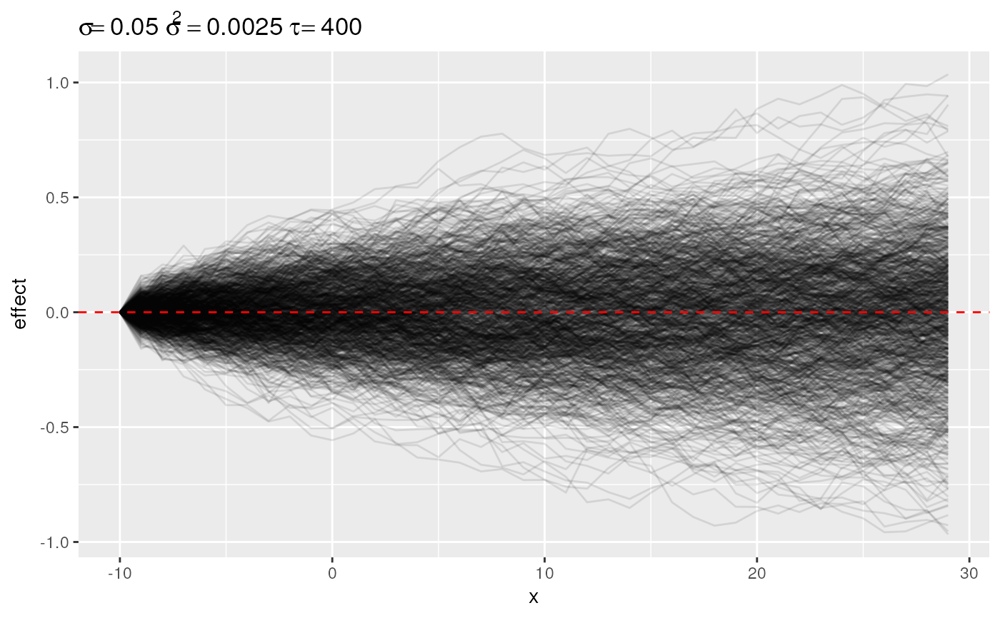
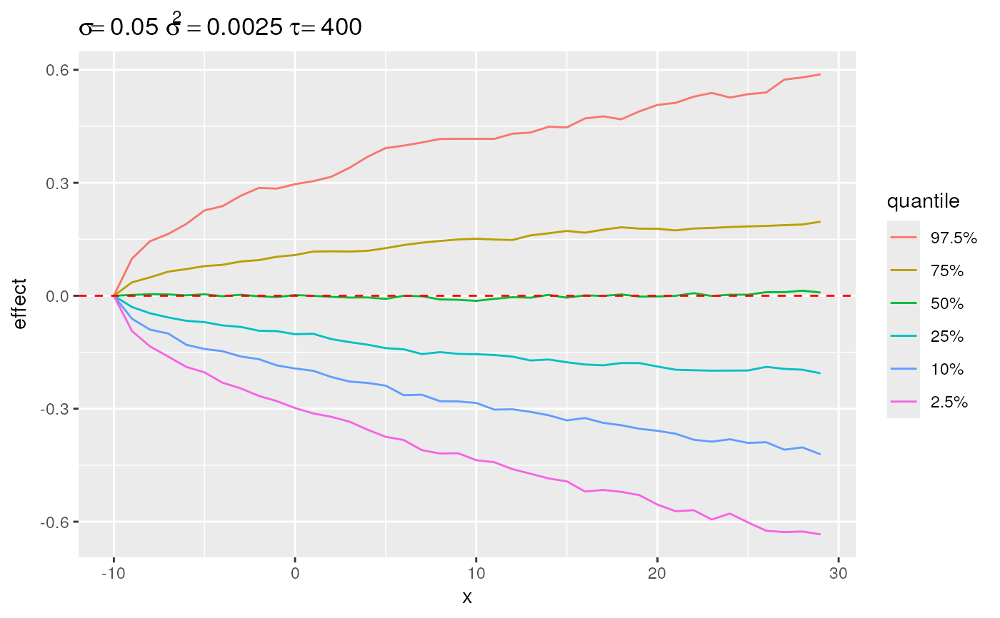
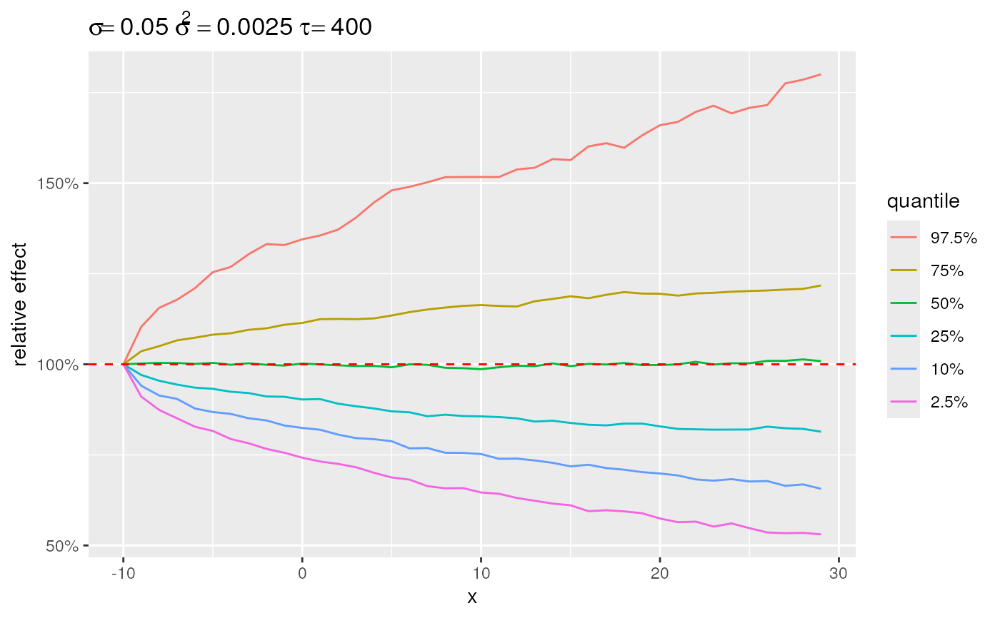
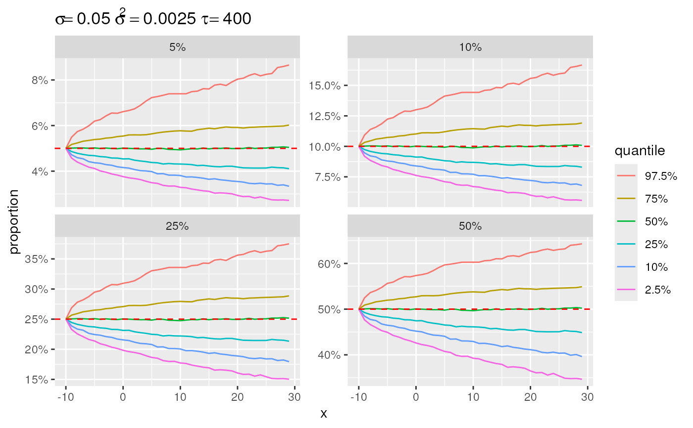
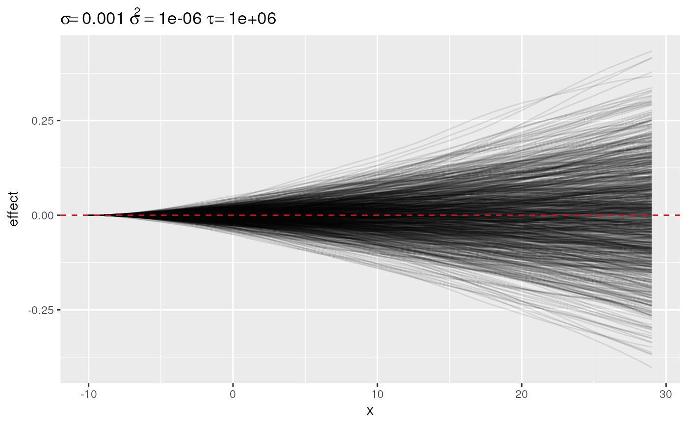
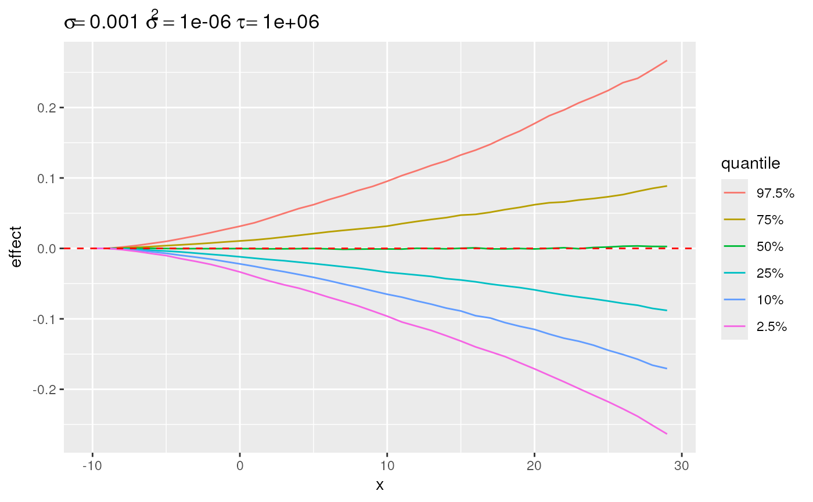
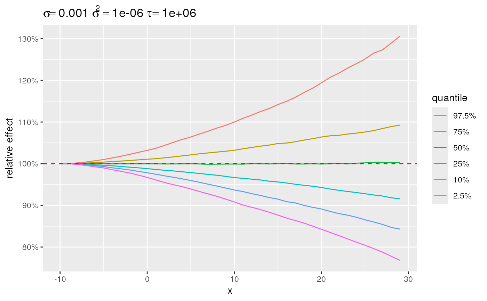
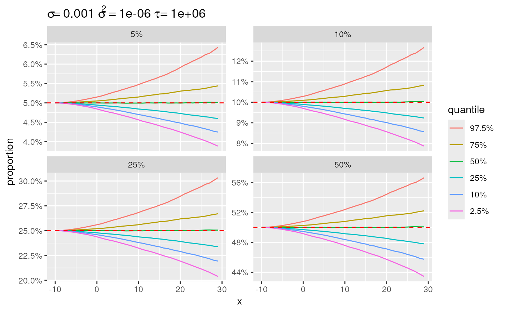

Plot Simulated Random Walks
Arguments
- x
An
sim_rwobject. Which is the output of\link{simulate_rw}- y
Currently ignored.
- ...
Currently ignored.
- link
Which link to use for back transformation.
- baseline
Optional baseline for the time series.
- center
Defines how to centre the time series to the baseline. Options are:
startall time series start at the baseline;meanthe average of the time series is the baseline;bottomthe lowest value of the time series equals the baseline;topthe highest value of the time series equals the baseline.
See also
Other priors:
plot.sim_iid(),
select_change(),
select_divergence(),
select_poly(),
select_quantile(),
simulate_iid(),
simulate_rw()
Examples
# \donttest{
set.seed(20181202)
x <- simulate_rw(sigma = 0.05, start = -10, length = 40)
plot(x)

plot(select_quantile(x))

plot(select_quantile(x), link = "log")

plot(select_quantile(x), link = "logit")

x <- simulate_rw(sigma = 0.001, start = -10, length = 40, order = 2)
plot(x)

plot(select_quantile(x))

plot(select_quantile(x), link = "log")

plot(select_quantile(x), link = "logit")

# }